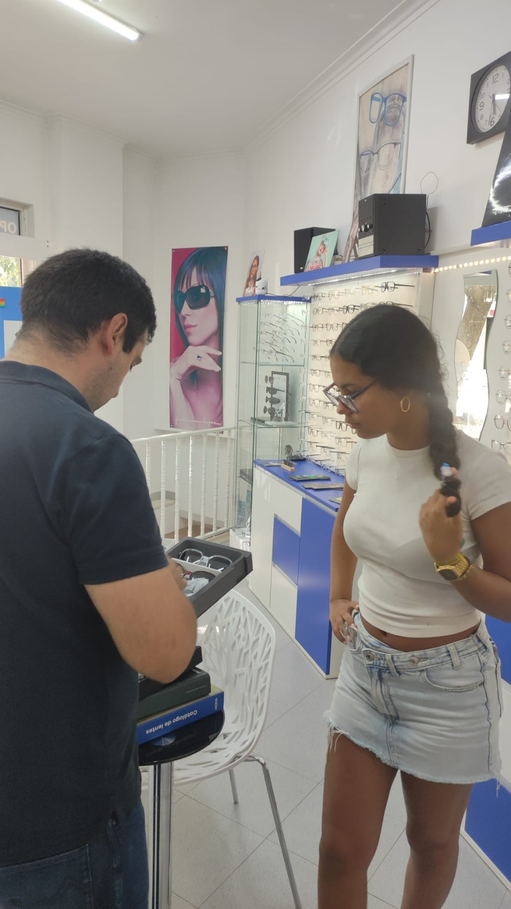
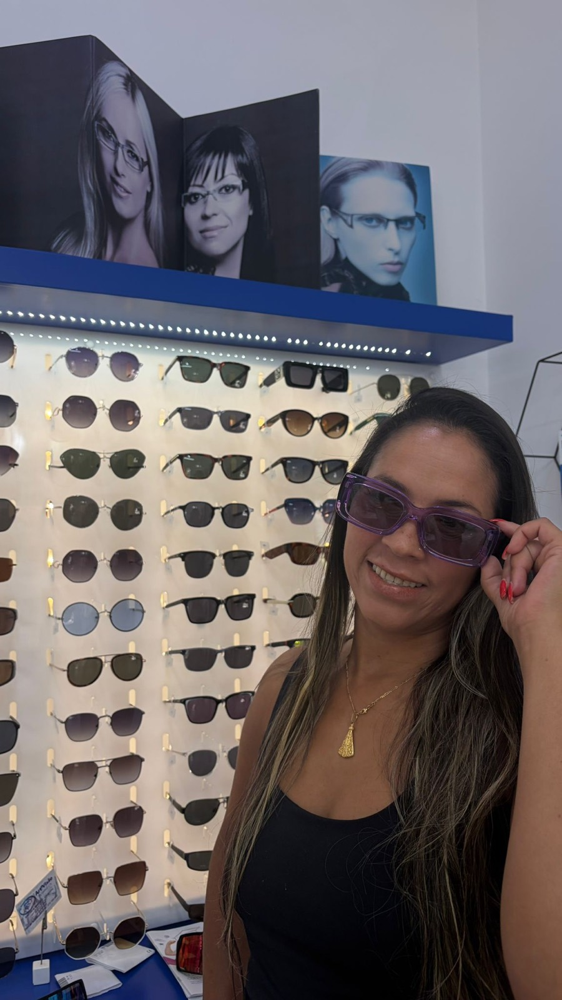
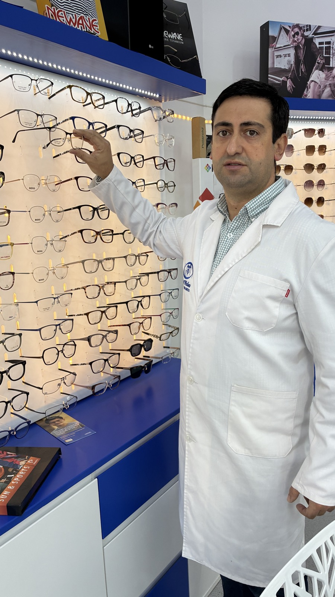
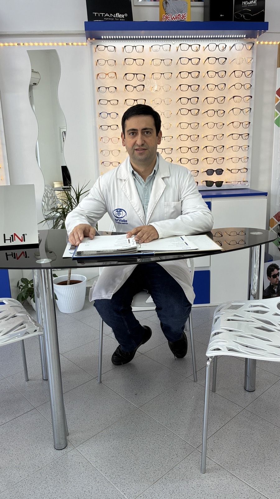
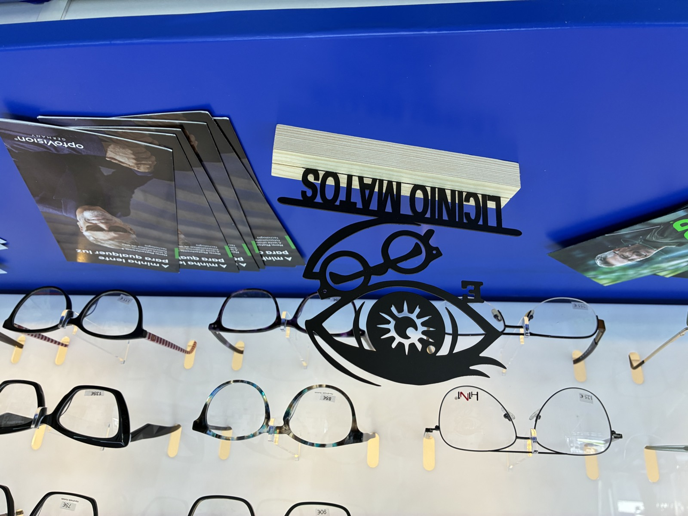
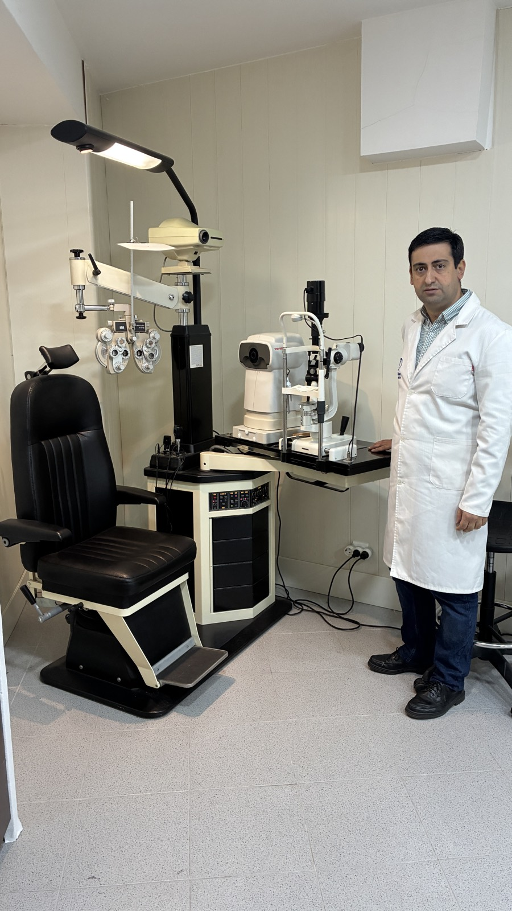
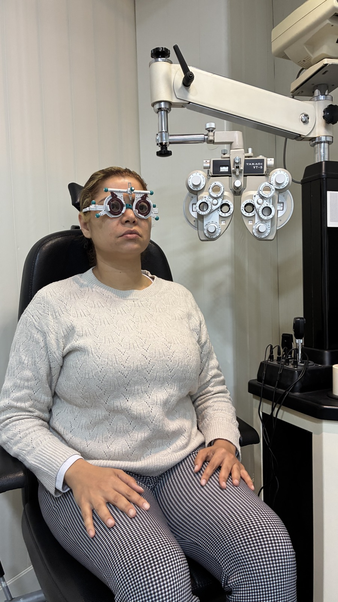
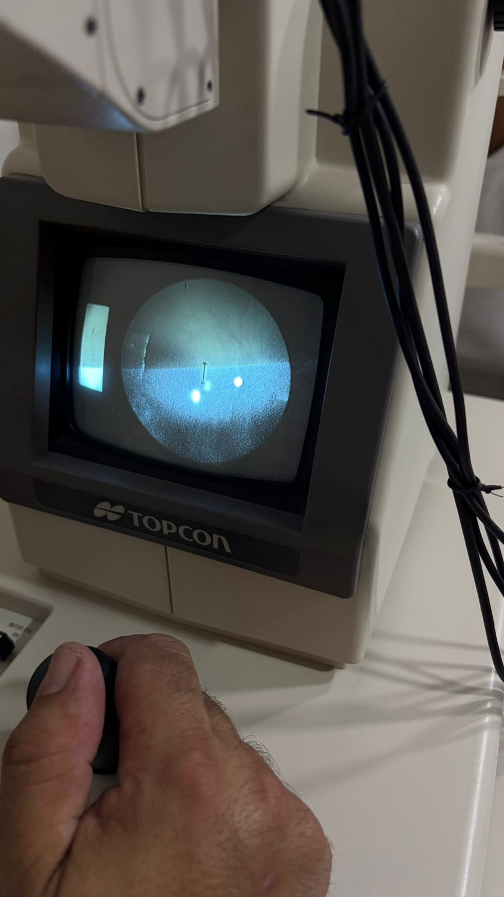
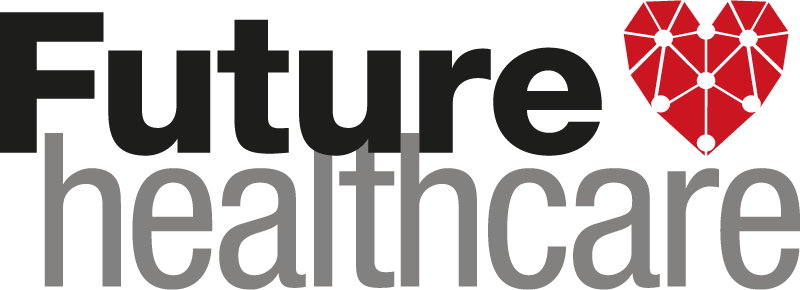
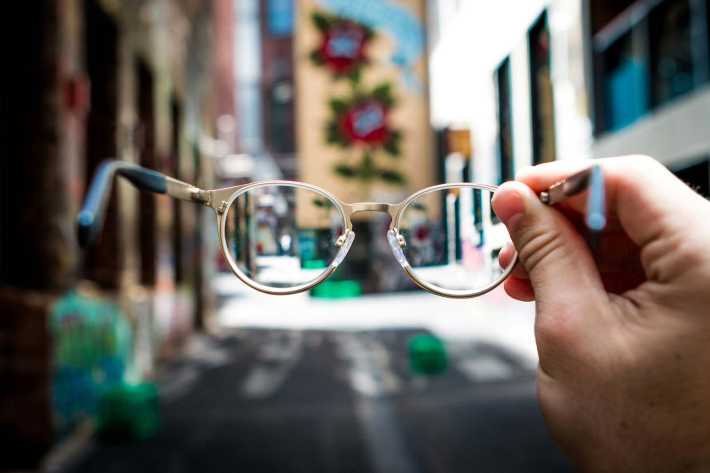

O que nos distingue
Oferecemos a melhor tecnologia oftálmica e marcas de renome, mas a nossa prioridade é a forma como o recebemos. Reservamos tempo para escutar as suas necessidades, avaliar a sua saúde ocular com rigor e ajudá-lo a encontrar os óculos perfeitos — com a calma e a confiança de quem está entre amigos.
Responsável técnico
Dr. Licínio Nunes Matos
Optometrista · Contactologista
- Habilitações académicas
- Licenciatura em Optometria - Ciências da Visão pela Universidade da Beira Interior (UBI), uma instituição de referência nacional sediada na Covilhã e pioneira no ensino e investigação desta vertente da saúde visual em Portugal.
- Especialidades técnicas
- Atuação focada em Optometria (avaliação primária da saúde visual, refração e prescrição de lentes) e Contactologia (especialização na adaptação de lentes de contacto para a correção de diferentes problemas oculares, como miopia, astigmatismo ou presbiopia).
Marcas confiáveis
Parceiros que inspiram a nossa seleção de armações
Uma curadoria de marcas de referência em estilo e tecnologia óptica, escolhidas para oferecer uma experiência premium em Portugal.
Parcerias
Acordos que facilitam o acesso à saúde visual.
Trabalhamos com os principais seguros e programas de benefícios em Portugal para tornar os seus óculos mais acessíveis.

Future Healthcare
Aceda aos benefícios especiais Future Healthcare. Exames, armações e lentes com vantagens exclusivas para os seus clientes.
O que vendemos
Óculos e lentes para cada necessidade.
Trabalhamos com marcas portuguesas e internacionais de armações e com as principais marcas de lentes de contacto. O tipo certo para si decide-se depois do exame, nunca antes.
Óculos
Lentes de contacto
Em destaque
Óculos graduados
Lentes monofocais para corrigir a visão ao perto ou ao longe.
Progressivos e bifocais
Longe, intermédio e perto na mesma lente, sem trocar de óculos.
Óculos de sol
Com ou sem graduação, com proteção UV e opção polarizada.
Óculos para crianças
Armações leves e resistentes, dimensionadas para o rosto infantil.
Lentes diárias
Um par novo por dia, sem manutenção. Práticas para uso ocasional e desporto.
Mensais e quinzenais
Reutilizáveis, com limpeza diária. A opção mais económica para uso contínuo.
Lentes tóricas
Desenhadas para corrigir astigmatismo, com estabilização no olho.
Lentes multifocais
Perto e longe na mesma lente, para quem quer dispensar os óculos.




O que fazemos
Cuidado completo para os seus olhos.
A visão altera-se devagar e quase sempre sem aviso — a graduação muda, a pressão intraocular sobe, a retina dá os primeiros sinais muito antes de haver queixas. Um exame regular apanha essas alterações enquanto ainda são simples de corrigir. Por isso recomendamos uma consulta de dois em dois anos, e todos os anos a partir dos 60 ou sempre que haja diabetes ou casos de glaucoma na família.
Exame visual completo
Avaliação detalhada da sua acuidade visual com equipamentos modernos e tempo para si.
Aconselhamento de armações
Sugerimos modelos pensando na sua morfologia, estilo e rotina diária.
Lentes antirreflexo
Lentes monofocais, progressivas e de proteção, com garantia e adaptação.
Manutenção e garantia
O nosso acompanhamento não acaba na entrega. Limpeza ultrassónica, reajuste da armação e pequenas reparações são gratuitos para os nossos clientes, sempre que precisar.
Unidade Móvel de Optometria
Nem sempre é fácil chegar à óptica. Deslocamo-nos a eventos na Beira Alta e na Beira Baixa — em lares, escolas, empresas e juntas de freguesia — e levamos o rastreio visual a quem dele precisa.
Saber mais
O mapa é fornecido pelo OpenStreetMap. Ao mostrá-lo, o seu endereço IP é partilhado com esse serviço.
Quem confia
Clientes que viram a diferença.
Mais de uma década a construir relações de confiança. Estas são algumas das vozes que nos acompanham.
"Atendimento personalizado e armações que parecem feitas à medida. Não troco a Art'Visão por nada."
Cliente desde 2014
"Exame visual minucioso e óculos prontos no prazo. Profissionalismo do início ao fim."
Cliente · Lisboa
"Ajudaram-me a encontrar a armação ideal para o meu rosto. Saí da loja a sorrir."
Cliente desde 2019
As avaliações dos nossos clientes estão na nossa página de Facebook. Se já nos visitou, a sua opinião ajuda quem ainda não conhece a loja.
Ver e deixar avaliaçõesVisite-nos
Passe por cá. Trazemos o café.
Marque o seu exame visual ou venha simplesmente experimentar. Estamos prontos para o receber.
+351 926 002 095E-mail
Castelo Branco
Horário
Ter–Sáb · 10h–17h30
Almoço 13h–14h
O mapa é fornecido pelo Google e coloca cookies no seu dispositivo.
Soito
Horário
Terça · 10h–17h30
Sáb · 10h–13h30
O mapa é fornecido pelo Google e coloca cookies no seu dispositivo.
Envie-nos uma mensagem
Respondemos por email, normalmente no mesmo dia útil. Para marcações urgentes, prefira o telefone.
Os dados que escrever são usados apenas para lhe responder e não são partilhados com terceiros.
O dia a dia da loja.
Novidades, armações acabadas de chegar e bastidores do atendimento. Siga-nos em @art_visao.